Веб-платформа мониторинга
рабочих процессов на объектах
Django-приложение для контроля задач, оборудования и алармов на производственных объектах. Поддерживает несколько организаций, развёрнуто на fieldlog.ru.
О проекте
Платформа для управления рабочими процессами на производственных объектах. Сотрудники ведут задачи по станциям, учитывают оборудование на складах с привязкой к объектам и выгружают списки в .xlsx. Архитектура поддерживает мультиарендность — каждая организация работает в своём изолированном пространстве через URL-префикс.
01 · Сводка
Главная страница организации
Счётчики по задачам, объектам, оборудованию и складам: сколько задач открыто, просрочено и скоро истекает — отдельно свои и всей организации. Ниже лента последних изменений: кто создал задачу, сменил статус, оставил комментарий или добавил вложение. Слева — панель значков: при наведении значок показывает название раздела, по клику раскрывает его страницы поверх содержимого.
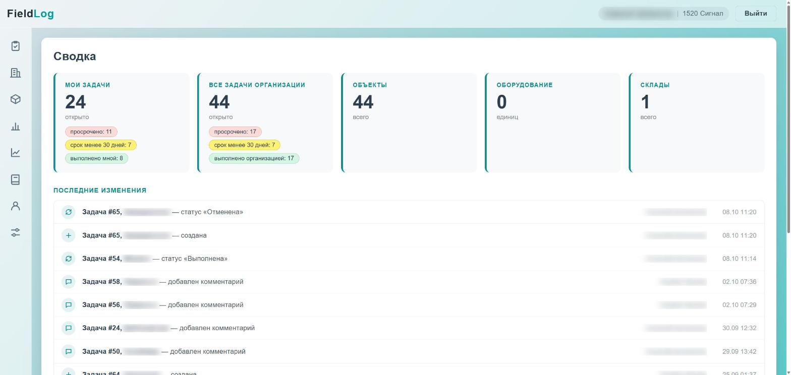
Сводка и лента последних изменений
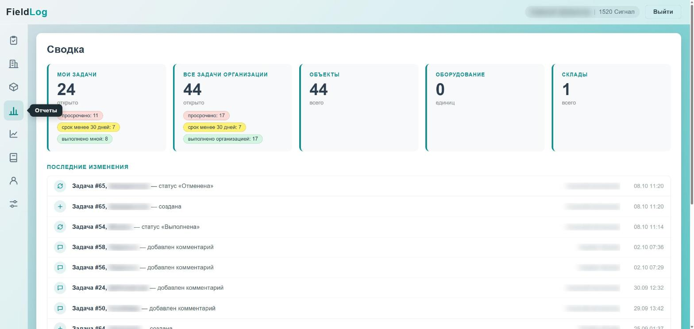
Меню: подсказка при наведении
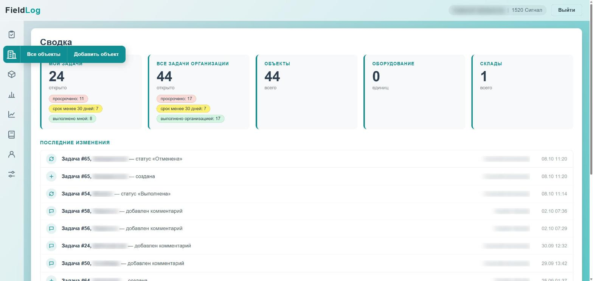
Меню: раздел раскрыт по клику
02 · Объекты
Станции и их задачи
Список объектов организации с поиском по названию, дороге, дистанции и системе. Прямо в списке можно раскрыть задачи по объекту. В карточке объекта — его параметры, описание и все связанные задачи со статусами.
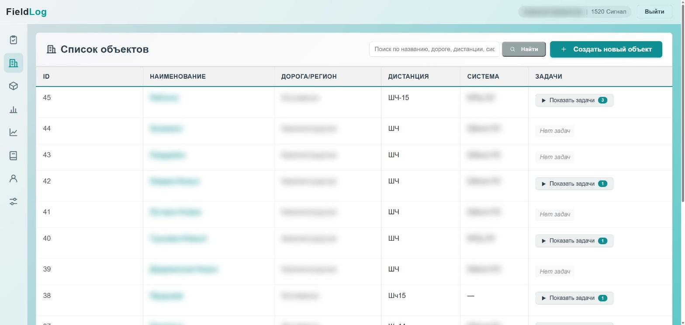
Список объектов / станций
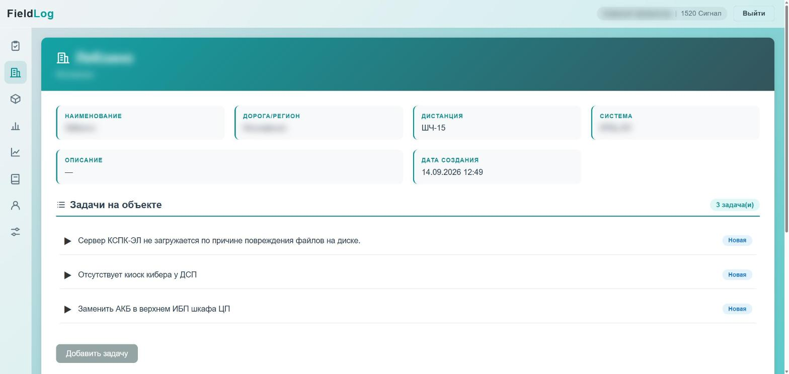
Карточка объекта
03 · Задачи
Статусы, комментарии и вложения
У задачи есть объект, ответственные, срок и статус. Сменить статус могут только ответственный и пользователи с нужными правами; под статусом видно, кто и когда сделал последний переход. К задаче прикладывают файлы и пишут комментарии, свой комментарий можно править в течение 24 часов.
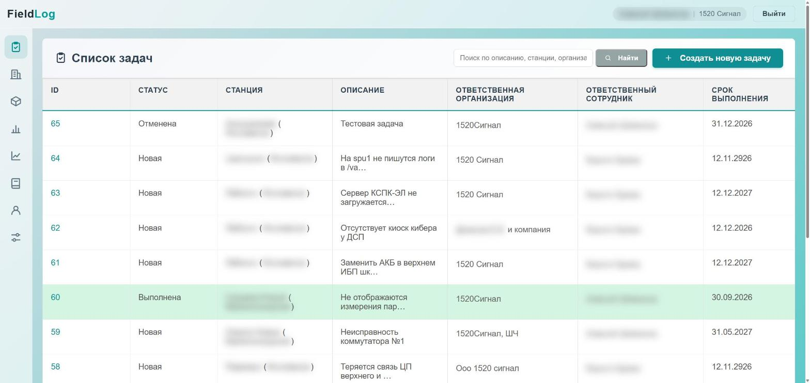
Список задач
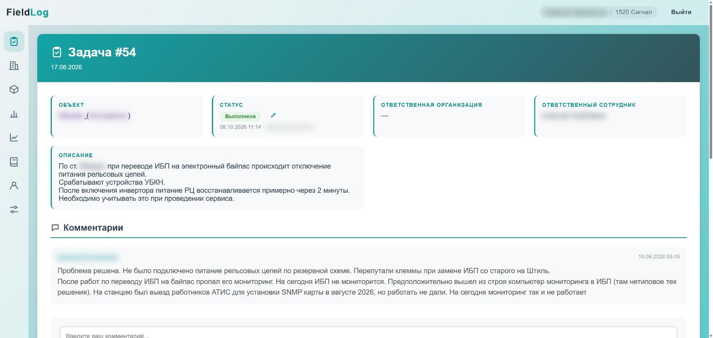
Карточка задачи: статус с историей и комментарии
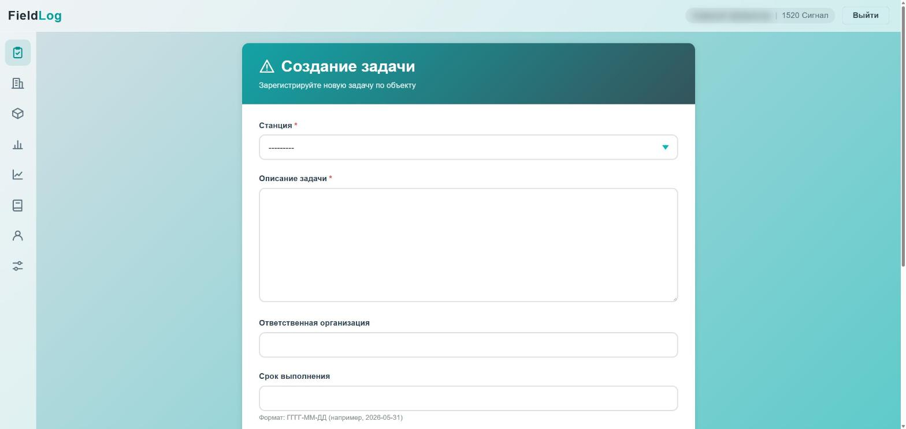
Создание задачи
04 · База знаний
Инструкции и справочник алармов
Личная библиотека инструкций: файлы и внешние ссылки с названием и описанием. Уже загруженный коллегой файл можно добавить себе, не загружая повторно. В том же разделе — справочник алармов с поиском.
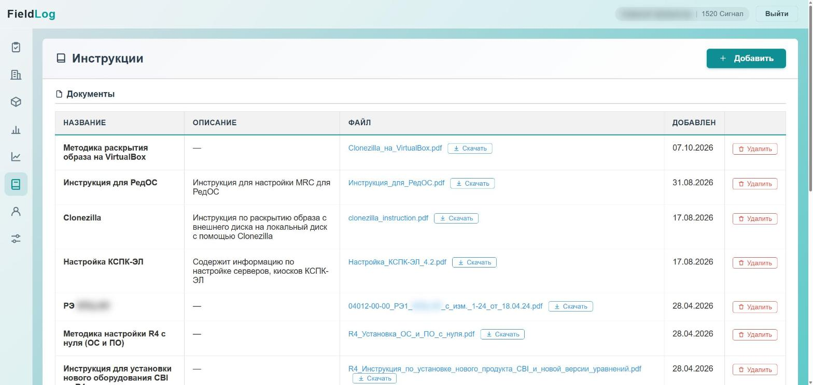
База инструкций
05 · Пользователи
Вход, регистрация и профиль
Регистрация открытая, но доступ к данным организации новый пользователь получает только после того, как администратор назначит ему организацию и права. В профиле — личные данные и аватар, список коллег виден только внутри своей организации.
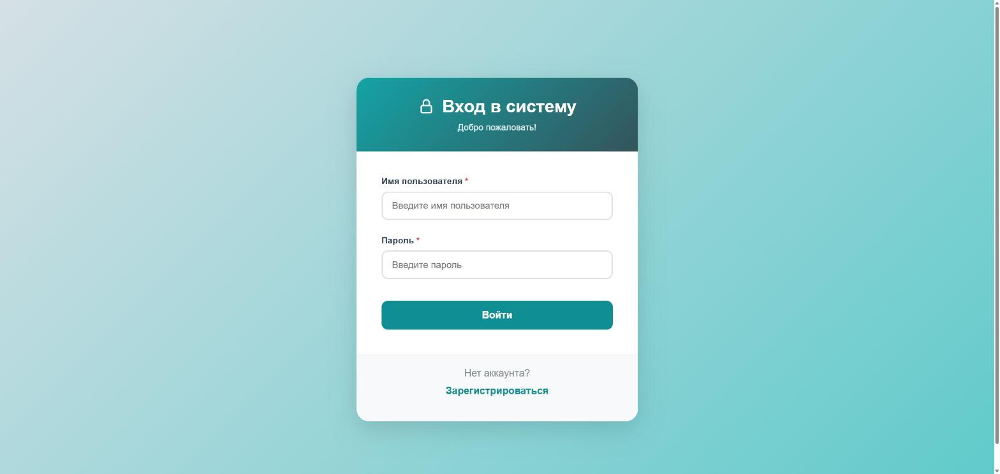
Страница входа
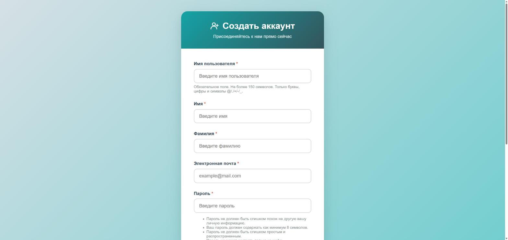
Регистрация пользователя
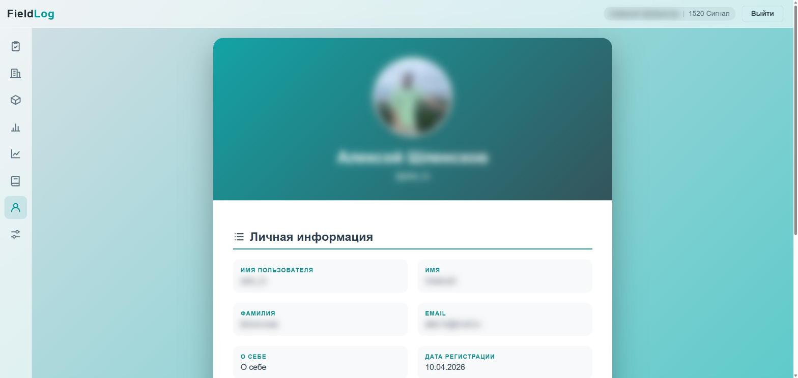
Профиль пользователя